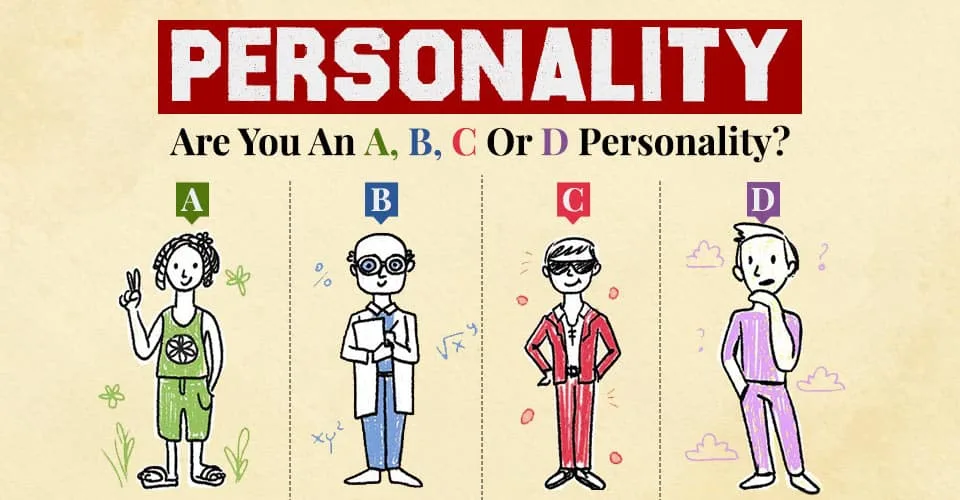
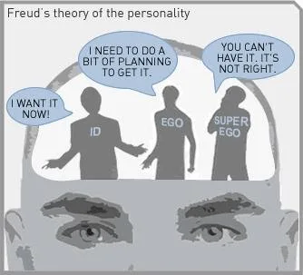
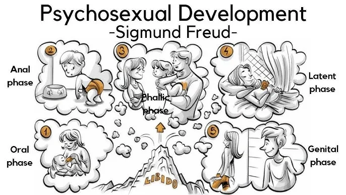
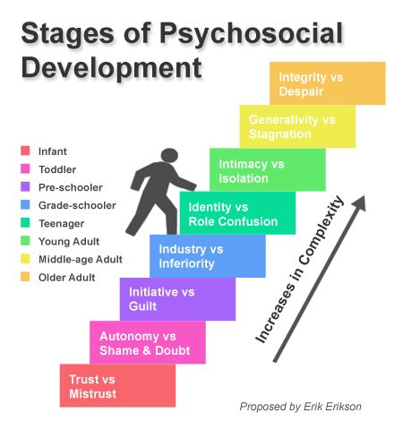
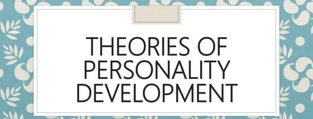
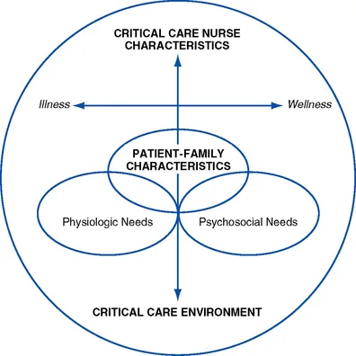

Expanded Nursing Uganda Explanation
Psychological aspects in nursing care of patients should be understood beyond a short definition. Link the concept to patient history, focused assessment, common risks, nursing priorities, documentation and evaluation of outcomes.
01 Personality
The word personality is derived from the word " persona ," which was used to describe the theatrical mask worn by some dramatic actors at that time. Psychologists who study personality aim to understand why people exhibit diverse emotional, motivational, and behavioral patterns (e.g., why some are "bad," "good," "sad," or "glad").
So, they define personality as the reasonably stable patterns of emotions, motives, and behavior that distinguish one person from another. Personality is simply the sum total of an individual’s physical, mental, and environmental characteristics which makes that person unique from others.
Some psychologists define personality as an individual’s unique and relatively stable patterns of behavior, thoughts, and emotions. Personality may also be defined as a distinctive and relatively consistent way of thinking, feeling, and behaving that characterize a person’s responses to life situations.
Sigmund Freud proposed that one's adult personality is largely determined by life experiences that occur during the first five years of life. He put forward two major theories to explain this:
02 Personality Development
Personality is defined as the sum total of an individual's physical, mental, and emotional characteristics which work together to make that person unique from others.
Personality develops through the interaction of hereditary predisposition (nature) and environmental influences (nurture). Children grow physically, mentally, socially, emotionally, and form attachments and relationships, all contributing to their personality.
- Structural Theory of Personality
- Theory of Psycho-Sexual Development
According to Sigmund Freud, the mind was divided into three separate systems that interact to form an individual's personality:
- The Id: (See notes of parts of the mind for detailed explanation)
- The Ego: (See notes of parts of the mind for detailed explanation)
- The Superego: (See notes of parts of the mind for detailed explanation)
Freud further divided the mind into three levels of consciousness:
- Conscious: Current thoughts, feelings, and memories.
- Pre-conscious: Information not currently in awareness but can be easily retrieved.
- Unconscious: A reservoir of feelings, thoughts, urges, and memories that are outside of our conscious awareness.
According to Freud, all children pass through five stages of psycho-sexual development. Each stage is characterized by a specific erogenous zone that is the primary source of pleasure.
Ideally, all children should go through the five stages smoothly. However, if a child experiences significant problems or excessive gratification at one or another stage, it may lead to FIXATION .
Fixation: A state of arrested psycho-sexual development, where an individual remains emotionally "stuck" at a particular stage. For example, an adult who regresses (returns to earlier developmental behaviors) when faced with difficulties or stressful situations may be a reflection of fixation at one of the stages of psycho-sexual development.
During this stage, the child derives pleasure and satisfaction from activities involving their mouth, lips, and tongue. The child loves sucking and biting.
- Potential Fixation: If the child experiences problems such as early weaning or excessive gratification, it may lead to frustrations and dependencies.
- Adult Behaviors due to Oral Fixation: Sucking fingers (thumb sucking), desire to smoke, overeating, excessive alcohol consumption, nail-biting, excessive kissing, pen-biting.
- Oral Aggressive Character: Children whose parents were aggressive and frustrated their needs at this stage may develop an oral aggressive character, becoming aggressive and dominating adults in the future.
During this stage, the anal region becomes the major source of satisfaction/pleasure, primarily through the process of bowel control (toilet training).
- Behaviors: The child may enjoy loud defecation (gassing), refusing to defecate when parents want them to, or playing with feces.
- Anal Retentive Character (Fixation): When fixated, individuals may develop an "anal retentive" character, consisting of meanness, excessive orderliness, perfectionism, stubbornness, and sometimes obsessive-compulsive disorders.
During this stage, the center of satisfaction shifts to the genitals (penis and clitoris). This stage is crucial for gender identity development.
- Oedipus Complex (Boys): Boys acquire the Oedipus complex, developing sexual longings for their mothers. They may also experience "castration anxiety," becoming frightened that their fathers might cut off their penis as punishment.
- Electra Complex (Girls): During this stage, girls develop "penis envy," blaming their mothers for not being born with a penis. They develop the Electra complex by becoming very much attached to their fathers and may fear their mothers' awareness of this attachment. Girls resolve this conflict through identification with their mothers.
- Phallic Character (Fixation): Boys and girls who have problems at this stage may develop a phallic character. Later in life, men may become impulsive, arrogant, and overly self-assured. In women, it may produce a constant striving for superiority over men.
- Extreme Fixation: When severely fixated, individuals may exhibit deviant sexual behaviors such as rape (including sadistic rape) or incest.
During this stage, there is a period of relative calm in psycho-sexual development. Sexual feelings are at a low ebb; their sexual urges are repressed.
- Social Focus: Both girls and boys have little to do with each other, preferring to play with same-sex peers (boys with boys, girls with girls).
- Potential Fixation: When fixated, it is sometimes theorized to be associated with difficulties in forming heterosexual relationships later in life, potentially leading to homosexual or lesbian orientations (though modern psychology views sexual orientation as far more complex and not solely due to fixation).
During this stage, the main source of pleasure is the genitals, but the focus shifts towards mature sexual pleasure with a person of the opposite sex (or preferred sex). It is a trying period as adolescents navigate identity and relationships.
- Genital Character: Adults who successfully develop a genital character behave maturely, possess the ability to love and to be loved in a healthy way, and attain productive and creative goals in life.
NOTE: The above-mentioned stages are biologically programmed, meaning they are influenced by maturation. However, parents or other individuals interacting with the child play a crucial role. Either excessive gratification or extreme frustration at a particular stage can result in an individual getting emotionally "stuck" (fixated) at that particular stage, which may be associated with certain adult personality traits.
03 Erickson's Psychosocial Theory of Personality Development
Erik Erikson proposed that personality develops by confronting a series of eight major psychosocial stages throughout the lifespan. Each stage presents a crisis or conflict concerning how we view ourselves in relation to other people and the world. While each crisis is present throughout life, it takes on special importance during a particular age period.
During the first year of life, infants are entirely dependent on parents or caretakers. Whether we develop basic trust or mistrust depends on how adequately our needs are met and how much love and attention we receive from our caregivers.
During the next two years, children become ready to separate themselves from their parents and exercise their individuality through developing basic control over their own bodies and choices (e.g., toilet training, food choices).
- Outcome: If parents encourage exploration and independence within safe limits, children develop autonomy. If parents restrict children excessively or make harsh demands (e.g., during toilet training), children may develop shame and doubt about their abilities and later lack the courage to be independent.
Ages 3-5, children display great curiosity about the world and begin to take initiative in activities and interactions.
- Outcome: Children develop a sense of initiative if allowed freedom to explore, play, and receive answers to their questions. They can develop guilt about their desires and suppress their curiosity if they are overly criticized, held back, or punished for their initiatives.
Ages 6-12, life expands into school and peer activities. Children are focused on mastering academic and social skills.
- Outcome: Children who experience pride and encouragement in mastering tasks (academic, social, personal) develop industry (a sense of competence and a determination to achieve). Repeated failure and lack of praise for trying can lead to a sense of inferiority and inadequacy.
Adolescents must integrate various roles (student, friend, child, future professional) into a consistent and coherent sense of self-identity. This involves exploring beliefs, values, and goals.
- Outcome: If they successfully navigate this crisis, they achieve a strong sense of personal identity. If they fail to do so, they may experience confusion over "who they are" and their place in the world.
Young adults develop intimacy, which is the ability to form deep, meaningful, and committed relationships with others, particularly romantic partners. This requires a strong sense of self-identity established in the previous stage.
- Outcome: Many people form close adult relationships, fall in love, and marry. Failure to form such connections can lead to feelings of isolation and loneliness.
One achieves generativity by contributing to the next generation and society, doing things for others, exercising leadership, and making the world a better place. This can be through their careers, voluntary work, raising children, or involvement in religious and political activities.
- Outcome: While young adults can make such contributions, generativity becomes a more central issue in middle adulthood. Failure to achieve generativity leads to stagnation, a feeling of being unproductive and disconnected from society.
This marks the final psychosocial crisis and usually occurs during late adulthood (over 60s). Older adults reflect on their life and evaluate its meaning.
- Outcome: The person experiences integrity (a sense of completeness, fulfillment, and satisfaction with their life's journey) if the major crises of earlier stages have been successfully resolved. Those with failures or unresolved conflicts at earlier stages may experience despair, regret, and a feeling that they cannot live in a more fulfilling way, leading to bitterness and fear of death.
04 THEORIES OF PERSONALITY DEVELOPMENT
There is no single, universally accepted understanding of how personality develops. However, there are different perspectives and theories that attempt to explain personality development. These include psychodynamic theory, trait theory, and type theory.
For a detailed understanding, please refer to the "Personality Development according to Sigmund Freud" notes previously provided.
We often describe people in terms of "traits." For instance, we might say people are bright, difficult, or sophisticated. Traits are personality elements that are inferred from behavior, and they account for behavioral consistency (i.e., why people tend to act in certain ways across different situations).
The trait theory adopts a descriptive approach to personality and dates back to an ancient Greek physician, Hippocrates . Hippocrates believed that personality is determined by a balance of liquids or "humors" in the body: blood, phlegm, and yellow bile. Based on this, Hippocrates developed four basic personality types:
- SANGUINE These individuals are believed to have an abundance of blood.
- They tend to be cheerful and warm.
- They are optimistic, active, social, outgoing, talkative, and responsive.
- PHLEGMATIC These individuals are characterized as sluggish, peaceful, and controlled.
- They are calm, passive, thoughtful, often very cheerful, cool, and sometimes appear tired.
- They are associated with less phlegm and are typically even-tempered.
- They are easygoing, lively, carefree, good leaders, and tend to make and drop friends easily.
- MELANCHOLIC These individuals are believed to have too much black bile.
- They are often sad, gloomy/moody, rigid, quiet, always fearful, unsociable, and can be hot-tempered.
- CHOLERIC These individuals are believed to have excess yellow bile.
- They are easy to excite and easy to anger.
- They are restless, active, cheerful, changeable, and optimistic (often with high self-esteem).
This theory contemplates that there are distinct types of personalities, often categorized as Type A, Type B, and Type C.
- TYPE A PERSONALITY Individuals with a Type A personality are characterized by: Being highly success-oriented, impatient, always in a hurry, and irritable at times.
- They are often referred to as a "high-stress" type of personality.
- They have a double risk of developing cardiovascular diseases such as myocardial infarction (heart attack) and angina pectoris.
- They are aggressive and have high levels of competitiveness and ambition.
- They live under great pressure and have an exaggerated sense of time urgency.
- They become very irritated at delays or failure to meet their deadlines.
- They frequently try to do several things at once.
- They tend to overreact physiologically to events that arouse anger.
- TYPE B PERSONALITY Individuals with a Type B personality are generally: Relaxed with low stress levels, possessing patience and a calm demeanor.
- They tend to be coronary disease resistant, meaning they have a lower incidence of cardiovascular problems and high blood pressure.
- They are generally more agreeable and have a far less sense of time urgency compared to Type A individuals.
- TYPE C PERSONALITY Individuals with a Type C personality are sometimes associated with a "cancer-prone" personality (this is a controversial and not universally accepted concept in mainstream psychology). They are characterized by: Being highly sociable and perceived as "nice" people.
- They are very inhibited in showing negative emotions, often bottling up feelings like anger or anxiety, which seems to hinder active coping mechanisms.
- They tend to feel helpless and hopeless in the face of severe stress.
- They are often passive, uncomplaining, and compliant.
05 Differences between Normal and Abnormal Personalities
Distinguishing between normal and abnormal personalities is crucial in psychology and healthcare. While there is a spectrum, key differences often lie in the degree of distress, impairment, and deviation from cultural norms.
- Normal Personality: Exhibits flexible and adaptive responses to life's challenges.
- Experiences a wide range of emotions appropriate to situations.
- Maintains stable and fulfilling relationships.
- Has a realistic perception of self and others.
- Copes effectively with stress and adversity.
- Behaviors are generally within socially accepted norms and do not cause significant distress to self or others.
- Abnormal Personality (Personality Disorder): Inflexible and maladaptive patterns of thinking, feeling, and behaving that deviate significantly from cultural expectations.
- Causes significant distress or impairment in social, occupational, or other important areas of functioning.
- Patterns are pervasive across a broad range of personal and social situations.
- Often present since adolescence or early adulthood and stable over time.
- May have difficulty maintaining stable relationships, understanding social cues, or controlling impulses.
- The individual may not always perceive their own behavior as problematic, leading to challenges in seeking help.
06 ABNORMALITIES OF PERSONALITIES
These descriptions refer to certain enduring patterns of thinking, feeling, and behaving that deviate significantly from cultural expectations, are pervasive and inflexible, have an onset in adolescence or early adulthood, are stable over time, and lead to distress or impairment.
- INTROVERTS Usually quiet and do not mix well with others.
- Prefer a solitary life to company.
- Interests are more introspective and intellectual.
- May have difficulty in making friends.
- EXTROVERTS They like company and prefer a social way of life over solitude.
- They are more practical and action-oriented than introspective.
- Their interests often involve activities done in a team or group.
- AMBIVERT These individuals fall between the introvert and extrovert types of personality, exhibiting characteristics of both depending on the situation.
- OBSESSIVE (Often referred to in a clinical context as Obsessive-Compulsive Personality Disorder - OCPD, which is distinct from OCD) These are people who are always aiming at perfection, are extremely orderly, neat, and rigidly adhere to rules.
- They are always cautious and highly responsible.
- They are sometimes too rigid, governed by routine rather than situational considerations.
- They find great difficulty in adapting to change.
- They are reliable and cannot tolerate mistakes.
- They are consistent and punctual, often to an extreme degree.
- They can be uncomfortable with relationships due to their rigidity and need for control.
- Paradoxically, they may not complete tasks due to excessive preoccupation with detail and perfection.
- SCHIZOID (Schizoid Personality Disorder) These people are extremely introverted and tend to avoid social company.
- They are emotionally cold and aloof.
- They are inclined to daydreaming/fantasy and have a rich inner world.
- They often have no sense of humor.
- They can be absent-minded or seem to have a "split mind" in terms of attention.
- They have poor social skills.
- While distinct, schizoid personality can sometimes be an early indicator or precursor to schizophrenic illness for some individuals.
- CYCLOTHYMIC (Cyclothymic Disorder, a milder form of Bipolar Disorder) They are characterized by chronic mood swings, fluctuating between mild depressive symptoms and mild hypomanic (elevated mood) symptoms, not severe enough to be full-blown major depression or mania.
- Sometimes one is extroverted, good-natured, sociable, and emotionally warm.
- At other times, they can be gloomy, irritable, and emotionally cold.
- These individuals have a higher predisposition to develop bipolar affective disorder (manic-depressive psychosis).
- PARANOID (Paranoid Personality Disorder) They are very suspicious of others, interpreting their motives as malevolent.
- They exhibit excessive jealousy.
- They are difficult to please and take everything rather too seriously, avoiding a sense of humor.
- They may develop delusions of grandeur (exaggerated belief in one's importance) and persecution (belief that others are out to harm them).
- They lack trust and are usually hyper-alert to defend themselves.
- They frequently complain of being treated unfairly.
- In severe cases, they may develop paranoid schizophrenia.
- HYSTERICAL / HISTRIONIC (Histrionic Personality Disorder) Characterized by excessive emotionality and attention-seeking behavior.
- They are highly suggestible, easily influenced by others or circumstances.
- Show immaturity and are governed by emotions as opposed to realism or logic.
- PSYCHOPATHIC / ANTI-SOCIAL / SOCIO-PATHY (Antisocial Personality Disorder) They are noted for a profound lack of conscience, empathy, or remorse/regret for their actions.
- They do not learn from past experiences or punishments.
- They frequently show anti-social and disregard for the rights of others.
- Usually very intelligent, cunning, convincing, and highly deceptive.
- They make friends quickly but also drop them easily, using people for their own gain.
- They are disrespectful and exploitative.
- They can be violent and dishonest.
- Often have a history of neglect or abuse in childhood.
- They are prone to substance abuse (e.g., alcoholism) and sexual deviations.
- ANXIOUS / AVOIDANT (Avoidant Personality Disorder) Chronically pessimistic and always expecting the worst outcomes.
- Tensed up with chronic worrying and feelings of inadequacy.
- Always complaining of how unfairly they are treated by others in authority.
- Hard to please, as they perceive life as full of insurmountable problems.
- Feels the future holds no hope for them.
- NARCISSISTIC (Narcissistic Personality Disorder) They have a pervasive sense of superiority, grandiosity, and self-importance.
- They are extremely sensitive to failure, defeat, and criticism.
- When confronted with failure or criticism, they can easily become depressed or enraged.
- They expect to be admired and often suspect others' motives.
- They are viewed by others as self-centered, arrogant, selfish, and lacking empathy.
07 Psychological Challenges in Patients
Patients in a healthcare setting often face a multitude of psychological challenges that can significantly impact their well-being, recovery, and overall quality of life. Nurses play a critical role in identifying and addressing these challenges.
- Anxiety: Common due to uncertainty about diagnosis, treatment outcomes, pain, or fear of the unknown.
- Fear: Fear of death, pain, disfigurement, loss of independence, or loss of livelihood.
- Depression: Can arise from chronic illness, disability, loss of function, prolonged hospitalization, or grief over health changes.
- Stress: Related to the illness itself, hospital environment, financial burdens, or changes in family roles.
- Grief and Loss: Patients may grieve the loss of health, body image, future plans, or even their former self.
- Helplessness and Hopelessness: Feeling a lack of control over their situation or belief that their condition will not improve.
- Anger and Frustration: Directed at their illness, healthcare providers, family, or themselves for their situation.
- Body Image Disturbances: Especially after surgery, injury, or illness that alters physical appearance or function.
- Social Isolation: Due to prolonged hospitalization, limited visitors, or difficulty engaging in social activities.
- Cognitive Impairment: From illness, medication side effects, or age, leading to confusion, memory problems, or disorientation.
- Dependency: Loss of independence can lead to feelings of frustration and helplessness.
- Denial: A coping mechanism where patients refuse to acknowledge the reality of their illness.
08 Management of Psychological Challenges in Patients
Effective management of psychological challenges is an integral part of holistic nursing care. It requires a patient-centered approach, empathy, and a range of communication and therapeutic skills.
- Therapeutic Communication: Active listening and allowing patients to express their feelings without judgment.
- Providing accurate and honest information about their condition and treatment in an understandable manner.
- Using empathy to acknowledge and validate their feelings ("I understand this must be very difficult for you").
- Encouraging questions and addressing concerns openly.
- Emotional Support: Creating a safe and supportive environment where patients feel comfortable sharing their anxieties and fears.
- Reassuring patients and providing a sense of security.
- Encouraging family involvement and support where appropriate.
- Providing comfort measures (e.g., pain relief, comfortable environment).
- Patient Education: Educating patients about their illness, treatment plan, and expected outcomes to reduce anxiety and fear of the unknown.
- Teaching coping mechanisms and stress reduction techniques (e.g., deep breathing, mindfulness).
- Explaining procedures clearly to minimize apprehension.
- Promoting Autonomy and Control: Involving patients in decision-making regarding their care whenever possible.
- Encouraging independence in self-care activities to the extent possible.
- Allowing choices where appropriate (e.g., timing of baths, food preferences).
- Referral to Specialists: Collaborating with psychologists, psychiatrists, social workers, and counselors for patients with complex or severe psychological distress (e.g., clinical depression, severe anxiety disorders, adjustment disorders).
- Referring to support groups or peer counseling.
- Creating a Healing Environment: Minimizing noise, providing privacy, and ensuring a clean and comfortable space.
- Encouraging gentle activities or distractions (e.g., reading, music, light exercise if permitted).
- Ensuring adequate rest and sleep.
- Managing Physical Symptoms: Effective pain management, nausea control, and other symptom relief can significantly reduce psychological distress.
- Crisis Intervention: Being prepared to respond to acute psychological distress, panic attacks, or expressions of suicidal ideation.
- Ensuring patient safety and seeking immediate psychiatric consultation if needed.
- Advocacy: Advocating for the patient's needs and rights, ensuring they receive comprehensive care that addresses both their physical and psychological well-being.
09 Nursing Uganda Clinical Lens
Use Personality as a practical nursing topic, not only a memorized definition. Turn the topic into practical nursing knowledge: meaning, assessment, care priorities, teaching and evaluation.
- What to understand first: define personality, identify the normal or expected pattern, then explain what changes when the patient is unwell.
- Why it matters in care: the nurse must recognize risk early, explain findings clearly, document accurately and know when to escalate.
- How to revise it: connect each point to assessment, nursing diagnosis or care problem, intervention, rationale and evaluation.
10 Assessment Guide
- Key definitions, patient history, focused observations and risk factors.
- Findings that are normal, abnormal or urgent.
- Resources, referral needs and documentation requirements.
11 Nursing Priorities, Rationales and Outcomes
- Protect safety, comfort, dignity and infection prevention.
- Provide clear care, education and escalation when needed.
- Evaluate response and record what changed.
The rationale for these priorities is patient safety: nursing actions should prevent deterioration, reduce discomfort, support recovery and create clear evidence for the next caregiver.
- Expected outcome: The topic is understood in a way that supports safe nursing judgement and revision.
12 Patient Teaching and Revision Check
- Explain personality in simple language the patient or caregiver can repeat back.
- Teach warning signs, medicine or follow-up instructions, hygiene or lifestyle points where relevant.
- For exams, prepare a short answer using: definition, causes or risk factors, signs, assessment, management, complications and prevention.
- For ward practice, document baseline findings, actions taken, patient response and the plan for review.
Illustrations and Diagrams (6)






Related Video Lectures
Watch nursing lecture videos on YouTube for this topic. Opens in a new tab.
Watch on YouTubeExternal link: YouTube may use its own cookies and terms. Nursing Uganda is not affiliated with YouTube.